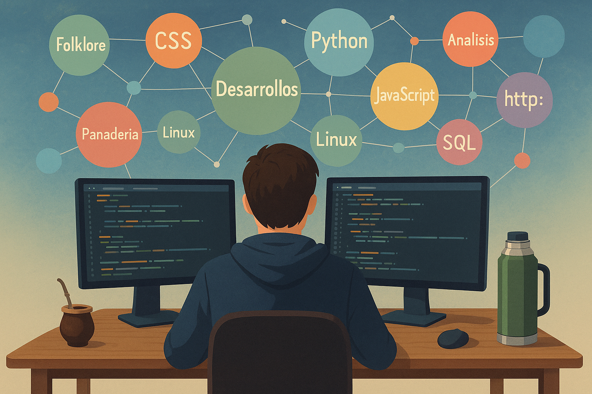
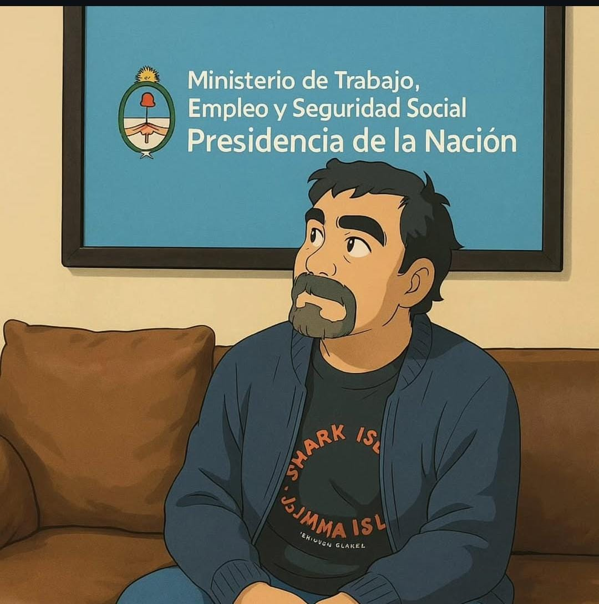

<<<<<<< HEAD
ReyBaj
Bienvenidos a mi página web

=======

ReyBaj.
Estudiante de Análisis de Sistemas, Desarrollor de sitios web responsivos y Profesor de Danzas Folklóricas Argentinas
 >>>>>>> 4531768ad2077aeb3ebe85f9c0526b05cbb9895b
>>>>>>> 4531768ad2077aeb3ebe85f9c0526b05cbb9895b